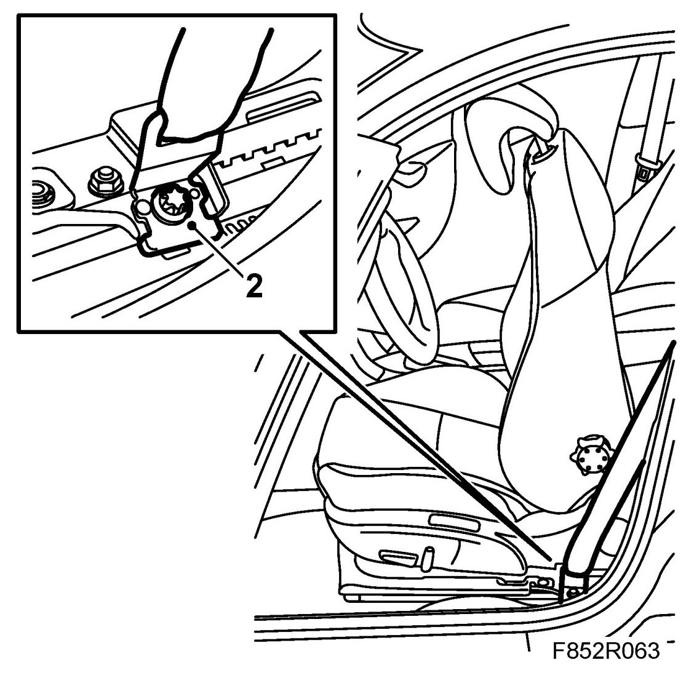
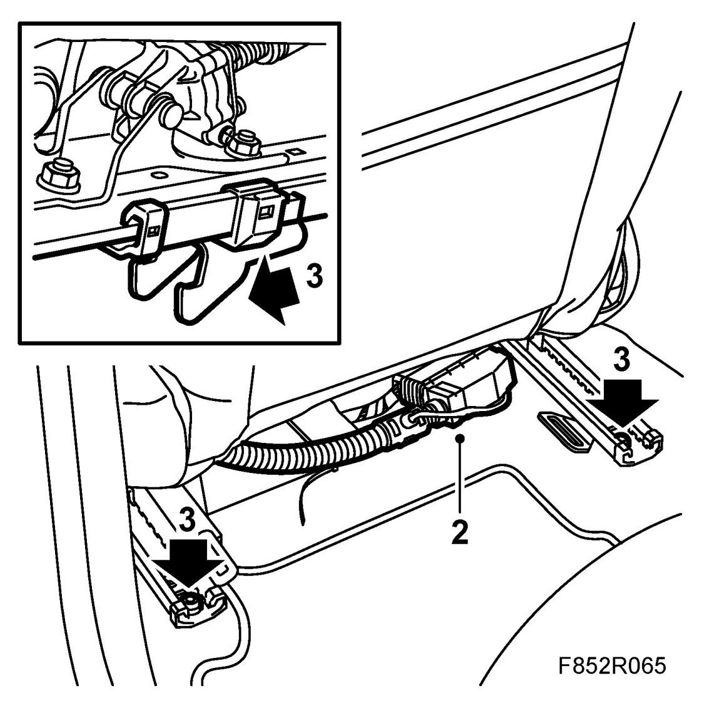
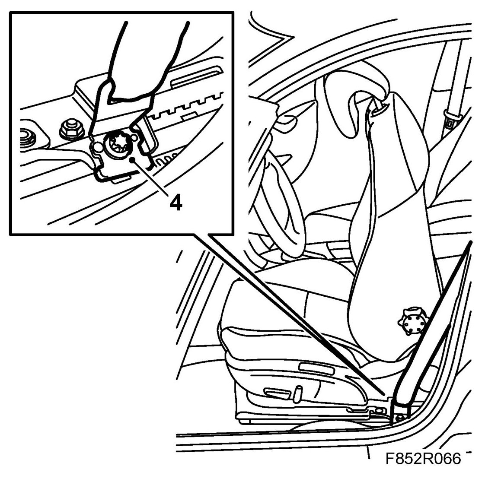

Front Seat
Front Seat
WARNING:
- All cars are equipped with an airbag system that has side airbags as a component. The side airbag is fitted under the backrest upholstery on each front seat.
- Work in accordance with the Safety and handling regulations.
To remove
1. Position the driver's seat as far forward as possible and tip the backrest forward.
Cars with PPS: Remove the cover on the belt force sensor. Unplug the belt force sensor connector.
2. Remove the cover and seatbelt mounting from the seat.

3. Remove the two rear retaining bolts from the seat.
4. Tip the seat forward.
5. Unplug the connector on the seat.
6. Pull the seat back to unhook the mountings. Carefully remove the seat.
To fit
1. Carefully lift in and position the seat. Tip the seat forward.

2. Plug in the connector on the seat.
3. Set the seat in its correct position. Be careful that the fitting hooks locate themselves correctly into their brackets, and fit the rear retaining bolts. Use 74 96 268 Thread locking adhesive.
Tightening torque 30 Nm (22 lbf ft)
4. Fit the seatbelt mounting and cover to the seat.

Tightening torque 30 Nm (22 lbf ft)
5. Cars with PPS: Plug in the belt force sensor connector. Fit the cover.
6. Turn the ignition key to ON and make sure the airbag warning lamp goes out after 4 seconds. If the airbag warning lamp does not go out, carry out the following procedure to locate the fault.
7. Turn ON the ignition and check the airbag system and control module using the diagnostic tool as follows:
Connect the diagnostic tool to the data link connector under the dashboard.
Delete any fault codes.
Turn the ignition OFF and then ON again. Wait at least 1 minute with the ignition on.
Check whether a diagnostic trouble code is shown:
If a diagnostic trouble code is shown:
Carry out fault diagnosis according to the instructions under respective trouble codes.
If a diagnostic trouble code is not shown:
Disconnect the diagnostic tool.